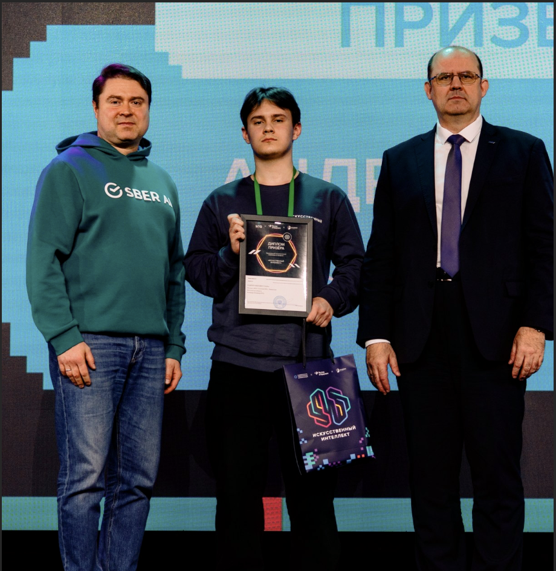

RecSys01
Рекомендации книг
Коллаборативные модели и текстовые признаки, ранжирование CatBoost и перестановка рекомендаций с учётом жанрового разнообразия. Обучение и проверка на временных окнах.
2-е место из 300 команд
Machine Learning · Portfolio
Работаю с рекомендательными системами, табличными данными, CV, NLP и аудио.
Три года занимаюсь машинным обучением: участвую в соревнованиях, хакатонах и разрабатываю собственные проекты. В проектах показываю весь путь: от данных и валидации до обучения и инференса.
Открыт к стажировкам и проектам в ML

01 / ПРОЕКТЫ
Задача, подход и результат.
В каждом проекте — ссылка на код.
Коллаборативные модели и текстовые признаки, ранжирование CatBoost и перестановка рекомендаций с учётом жанрового разнообразия. Обучение и проверка на временных окнах.
История студента и семантика курсов: E5, обучаемая совместимость и ансамбль бустингов. Отдельные подходы для новых курсов и студентов без истории.
Акустические и фазовые признаки вместе с представлениями wav2vec2. Проверка на отложенных дикторах и типах атак; код обучения, инференса и готовые веса.
41 целевая переменная и миллион клиентов. Бустинги и нейросетевые модели, OOF-признаки и отдельная смесь прогнозов для каждого продукта.
Два решения отборочного этапа: определение автора оценки перевода с COMET-признаками и восстановление текстовой формы через RuBERT с ограничениями BIO-разметки.
Сбор сделок и стакана через API, расчёт спреда, ликвидности и дисбаланса объёмов. Графики и автоматический отчёт в одном инструменте.
02 / РЕЗУЛЬТАТЫ
Помимо CAFA 6, участвовал в задачах прогнозирования структуры РНК, машинного перевода, компьютерного зрения и табличного ML. В House Prices — 76-е место примерно из 4500 участников.
Профиль и результаты на Kaggle ↗03 / ИНСТРУМЕНТЫ
Технологии и подходы, которые использую в своих решениях.
Помимо ML — тренажёрный зал, волейбол и AI-конференции.
04 / КОНТАКТЫ
Открыт к стажировкам и проектному сотрудничеству в машинном обучении. Напишите в Telegram или на почту.